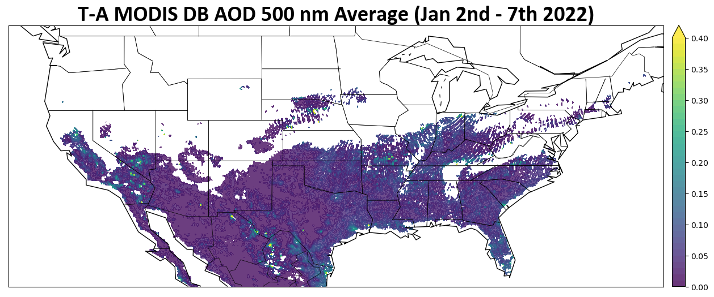
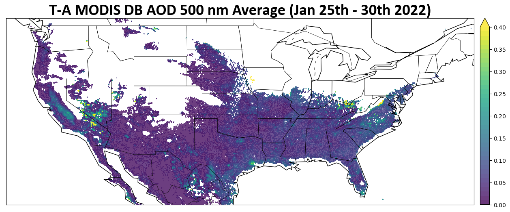
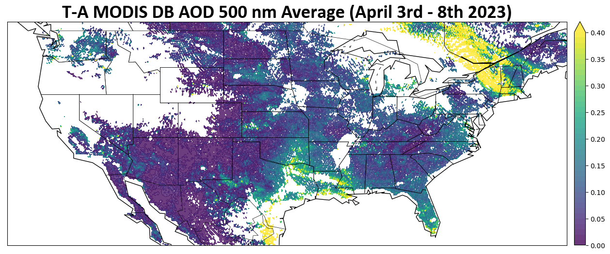

Aeorosl Optical Properties from the SAIL Campaign
In order to assess aerosol’s effects on surface snow albedo we first found a smoke, dust, and neutral event to compare. These events are Jan 25 – 30th 2022, Apr 3 – 8th 2023, and Jan 2 – 7th 2023 respectively.



import os
import warnings
import cartopy.crs as ccrs
import matplotlib.pyplot as plt
from datetime import timedelta
import cmweather
import numpy as np
import pandas as pd
import xarray as xr
import glob
from bokeh.models.formatters import DatetimeTickFormatter
import hvplot.xarray
import holoviews as hv
hv.extension("bokeh")
import act
import pyart
warnings.filterwarnings('ignore')
## You are using the Python ARM Radar Toolkit (Py-ART), an open source
## library for working with weather radar data. Py-ART is partly
## supported by the U.S. Department of Energy as part of the Atmospheric
## Radiation Measurement (ARM) Climate Research Facility, an Office of
## Science user facility.
##
## If you use this software to prepare a publication, please cite:
##
## JJ Helmus and SM Collis, JORS 2016, doi: 10.5334/jors.119
Jan 25th - 30th 2022
# Set your username and token here!
username = 'user name'
token = 'token'
# Set the datastream and start/enddates for Smoke event
datastream = 'gucaoppsap1flynn1hS2.c1'
startdate = '2022-01-25'
enddate = '2022-01-30'
# Use ACT to download data
result = act.discovery.download_arm_data(username, token, datastream, startdate, enddate)
ds = act.io.read_arm_netcdf(result)
# Set the datastream and start/enddates for Dust event
datastream = 'gucaoppsap1flynn1hS2.c1'
startdate = '2023-04-03'
enddate = '2023-04-08'
result = act.discovery.download_arm_data(username, token, datastream, startdate, enddate)
ds2 = act.io.read_arm_netcdf(result)
# Set the datastream and start/enddates for Control event
datastream = 'gucaoppsap1flynn1hS2.c1'
startdate = '2022-01-02'
enddate = '2022-01-07'
result = act.discovery.download_arm_data(username, token, datastream, startdate, enddate)
ds3 = act.io.read_arm_netcdf(result)
# clean the data for each case
ds.clean.cleanup()
ds2.clean.cleanup()
ds3.clean.cleanup()
---------------------------------------------------------------------------
InvalidURL Traceback (most recent call last)
Cell In[9], line 11
8 enddate = '2022-01-30'
10 # Use ACT to download data
---> 11 result = act.discovery.download_arm_data(username, token, datastream, startdate, enddate)
12 ds = act.io.read_arm_netcdf(result)
14 # Set the datastream and start/enddates for Dust event
File /data/project/jupyterhub/notebook-envs/arm-summer-school-2024-env/lib/python3.11/site-packages/act/discovery/arm.py:115, in download_arm_data(username, token, datastream, startdate, enddate, time, output)
109 query_url = (
110 'https://adc.arm.gov/armlive/livedata/query?' + 'user={0}&ds={1}{2}{3}&wt=json'
111 ).format(':'.join([username, token]), datastream, start, end)
113 # get url response, read the body of the message,
114 # and decode from bytes type to utf-8 string
--> 115 response_body = urlopen(query_url).read().decode('utf-8')
116 # if the response is an html doc, then there was an error with the user
117 if response_body[1:14] == '!DOCTYPE html':
File /data/project/jupyterhub/notebook-envs/arm-summer-school-2024-env/lib/python3.11/urllib/request.py:216, in urlopen(url, data, timeout, cafile, capath, cadefault, context)
214 else:
215 opener = _opener
--> 216 return opener.open(url, data, timeout)
File /data/project/jupyterhub/notebook-envs/arm-summer-school-2024-env/lib/python3.11/urllib/request.py:519, in OpenerDirector.open(self, fullurl, data, timeout)
516 req = meth(req)
518 sys.audit('urllib.Request', req.full_url, req.data, req.headers, req.get_method())
--> 519 response = self._open(req, data)
521 # post-process response
522 meth_name = protocol+"_response"
File /data/project/jupyterhub/notebook-envs/arm-summer-school-2024-env/lib/python3.11/urllib/request.py:536, in OpenerDirector._open(self, req, data)
533 return result
535 protocol = req.type
--> 536 result = self._call_chain(self.handle_open, protocol, protocol +
537 '_open', req)
538 if result:
539 return result
File /data/project/jupyterhub/notebook-envs/arm-summer-school-2024-env/lib/python3.11/urllib/request.py:496, in OpenerDirector._call_chain(self, chain, kind, meth_name, *args)
494 for handler in handlers:
495 func = getattr(handler, meth_name)
--> 496 result = func(*args)
497 if result is not None:
498 return result
File /data/project/jupyterhub/notebook-envs/arm-summer-school-2024-env/lib/python3.11/urllib/request.py:1391, in HTTPSHandler.https_open(self, req)
1390 def https_open(self, req):
-> 1391 return self.do_open(http.client.HTTPSConnection, req,
1392 context=self._context, check_hostname=self._check_hostname)
File /data/project/jupyterhub/notebook-envs/arm-summer-school-2024-env/lib/python3.11/urllib/request.py:1348, in AbstractHTTPHandler.do_open(self, http_class, req, **http_conn_args)
1346 try:
1347 try:
-> 1348 h.request(req.get_method(), req.selector, req.data, headers,
1349 encode_chunked=req.has_header('Transfer-encoding'))
1350 except OSError as err: # timeout error
1351 raise URLError(err)
File /data/project/jupyterhub/notebook-envs/arm-summer-school-2024-env/lib/python3.11/http/client.py:1303, in HTTPConnection.request(self, method, url, body, headers, encode_chunked)
1300 def request(self, method, url, body=None, headers={}, *,
1301 encode_chunked=False):
1302 """Send a complete request to the server."""
-> 1303 self._send_request(method, url, body, headers, encode_chunked)
File /data/project/jupyterhub/notebook-envs/arm-summer-school-2024-env/lib/python3.11/http/client.py:1314, in HTTPConnection._send_request(self, method, url, body, headers, encode_chunked)
1311 if 'accept-encoding' in header_names:
1312 skips['skip_accept_encoding'] = 1
-> 1314 self.putrequest(method, url, **skips)
1316 # chunked encoding will happen if HTTP/1.1 is used and either
1317 # the caller passes encode_chunked=True or the following
1318 # conditions hold:
1319 # 1. content-length has not been explicitly set
1320 # 2. the body is a file or iterable, but not a str or bytes-like
1321 # 3. Transfer-Encoding has NOT been explicitly set by the caller
1323 if 'content-length' not in header_names:
1324 # only chunk body if not explicitly set for backwards
1325 # compatibility, assuming the client code is already handling the
1326 # chunking
File /data/project/jupyterhub/notebook-envs/arm-summer-school-2024-env/lib/python3.11/http/client.py:1148, in HTTPConnection.putrequest(self, method, url, skip_host, skip_accept_encoding)
1145 self._method = method
1147 url = url or '/'
-> 1148 self._validate_path(url)
1150 request = '%s %s %s' % (method, url, self._http_vsn_str)
1152 self._output(self._encode_request(request))
File /data/project/jupyterhub/notebook-envs/arm-summer-school-2024-env/lib/python3.11/http/client.py:1248, in HTTPConnection._validate_path(self, url)
1246 match = _contains_disallowed_url_pchar_re.search(url)
1247 if match:
-> 1248 raise InvalidURL(f"URL can't contain control characters. {url!r} "
1249 f"(found at least {match.group()!r})")
InvalidURL: URL can't contain control characters. '/armlive/livedata/query?user=user name:token&ds=gucaoppsap1flynn1hS2.c1&start=2022-01-25T00:00:00.000Z&end=2022-01-30T00:00:00.000Z&wt=json' (found at least ' ')
Smoke Case Beta Absorption and Scattering
# create a display with subplots for Abs and Sca
display = act.plotting.TimeSeriesDisplay({'PSAP': ds, 'Neph': ds},
subplot_shape=(2,), figsize=(10,12))
# Plot Abs for the first plot
display.plot('Ba_G_combined_10um', dsname='Neph', subplot_index=(0,))
display.day_night_background(dsname='Neph', subplot_index=(0,))
# Plot Sca as the second plot
display.plot('Bs_G_10um',dsname='PSAP', subplot_index=(1,))
display.day_night_background(dsname='PSAP',subplot_index=(1,))
plt.show()
Smoke Case AAE, AE, and SSA
AAE:
AAE during the smoke event almost entirely falls between the debated range of black carbon (~1.30 - 0.80).
AE:
AE during the smoke event stays in the threshold of fine mode particles (~1.7) and sees a decrease in particles sizes ~2 days into the event.
SSA:
SSA during the smoke event held in the upper 0.80s which while not far from 1.0 is still indicative of darker absorbing particles. SSA dropped further in the final two days of the event.
# create a line to indicate important points
line = np.ones(24*5)
# create a display with subplots for AAE, AE, and SSA
display = act.plotting.TimeSeriesDisplay(ds, figsize=(13, 10), subplot_shape=(3,))
# plot AAE
display.plot('AAE_BR_10um', subplot_index=(0,))
# indicate black carbon
display.axes[0].plot(ds['time'], line, 'k', linewidth=1, linestyle='--')
display.day_night_background(subplot_index=(0,))
# plot AE
display.plot('AE_BR_10um', subplot_index=(1,))
# indicate fine mode
display.axes[1].plot(ds['time'], line *1.7, 'k', linewidth=1, linestyle='--')
# indicate coarse mode
display.axes[1].plot(ds['time'], line, 'k', linewidth=1, linestyle='--')
display.day_night_background(subplot_index=(1,))
# plot ssa
display.plot('ssa_G_10um', subplot_index=(2,))
display.day_night_background(subplot_index=(2,))
April 3rd - 8th 2023
Dust Case Beta Absorption and Scattering
# create a display with subplots for Abs and Sca
display = act.plotting.TimeSeriesDisplay({'PSAP': ds2, 'Neph': ds2},
subplot_shape=(2,), figsize=(10,12))
# Plot Abs for the first plot
display.plot('Ba_G_combined_10um', dsname='Neph', subplot_index=(0,))
display.day_night_background(dsname='Neph', subplot_index=(0,))
# Plot Sca as the second plot
display.plot('Bs_G_10um',dsname='PSAP', subplot_index=(1,))
display.day_night_background(dsname='PSAP',subplot_index=(1,))
plt.show()
Dust Case AAE, AE, and SSA
AAE:
AAE during the dust event is mostly held above or around the upper limit of black carbon (~1.30 - 0.80). This likely indicates the presence of brown carbons or other dust-like particles as expected.
AE:
AE during the dust event fluctuated between values < 1.a (course mode) for the first two days, > 1.7 (fine mode) for the next two days, and back to course mode for the final two days.
SSA:
SSA during the dust event held in the lower to mid 0.90s which indicates relatively bright particles
# create a line to indicate important points
line = np.ones(24*5)
# create a display with subplots for AAE, AE, and SSA
display = act.plotting.TimeSeriesDisplay(ds2, figsize=(13, 10), subplot_shape=(3,))
# plot AAE
display.plot('AAE_BR_10um', subplot_index=(0,))
# indicate black carbon
display.axes[0].plot(ds2['time'], line, 'k', linewidth=1, linestyle='--')
display.day_night_background(subplot_index=(0,))
# plot AE
display.plot('AE_BR_10um', subplot_index=(1,))
# indicate coarse mode
display.axes[1].plot(ds2['time'], line *1.7, 'k', linewidth=1, linestyle='--')
# indicate fine mode
display.axes[1].plot(ds2['time'], line, 'k', linewidth=1, linestyle='--')
display.day_night_background(subplot_index=(1,))
# plot SSA
display.plot('ssa_G_10um', subplot_index=(2,))
display.day_night_background(subplot_index=(2,))
Jan 2nd - 7th 2022
Control Case Beta Absorption and Scattering
# create a display with subplots for Abs and Sca
display = act.plotting.TimeSeriesDisplay({'PSAP': ds3, 'Neph': ds3},
subplot_shape=(2,), figsize=(10,12))
# Plot Abs for the first plot
display.plot('Ba_G_combined_10um', dsname='Neph', subplot_index=(0,))
display.day_night_background(dsname='Neph', subplot_index=(0,))
# Plot Sca as the second plot
display.plot('Bs_G_10um',dsname='PSAP', subplot_index=(1,))
display.day_night_background(dsname='PSAP',subplot_index=(1,))
plt.show()
##Controlt Case AAE, AE, and SSA
AAE:
AAE during the control event is mostly held above or around the upper limit of black carbon (~1.30 - 0.80). However, the range of values seems to indicate a variety of particle types present.
AE:
AE during the control event varied between fine and coarse modes with a preference for fine mode. However, the final two days of the event trended toward values in the course mode range.
SSA:
SSA during the control event varied between values in the mid-0.90s and the 0.80s or lower. As the event went on there was an increasing trend toward darker particles.
# create a line to indicate important points
line = np.ones(24*5)
# create a display with subplots for AAE, AE, and SSA
display = act.plotting.TimeSeriesDisplay(ds3, figsize=(13, 10), subplot_shape=(3,))
# plot AAE
display.plot('AAE_BR_10um', subplot_index=(0,))
# indicate black carbon
display.axes[0].plot(ds3['time'], line, 'k', linewidth=1, linestyle='--')
display.day_night_background(subplot_index=(0,))
# plot AE
display.plot('AE_BR_10um', subplot_index=(1,))
# indicate coarse mode
display.axes[1].plot(ds3['time'], line *1.7, 'k', linewidth=1, linestyle='--')
# indicate fine mode
display.axes[1].plot(ds3['time'], line, 'k', linewidth=1, linestyle='--')
display.day_night_background(subplot_index=(1,))
# plot SSA
display.plot('ssa_G_10um', subplot_index=(2,))
display.day_night_background(subplot_index=(2,))